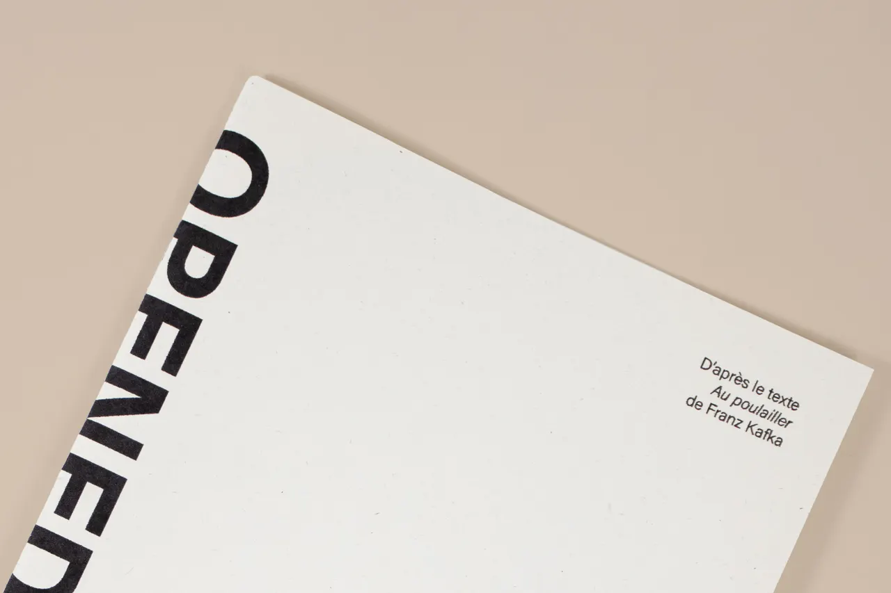
OPENED EYES
- 19 × 27 cm
- 2025
- Fusain et crayon de couleur
Édition dessinée sur la base du texte « Au poulailler » de Franz Kafka. Ce texte relate d’un spectacle de cirque dans lequel tout est millimétré, surjoué, c’en est presque glaçant. Personne ne se rend compte du problème sauf un personnage. Cette différence est accentuée grâce à l'illustration de personnage aveugles au sourire forcé exacerbé et d'un seul les yeux grands ouverts mais voué à se taire.

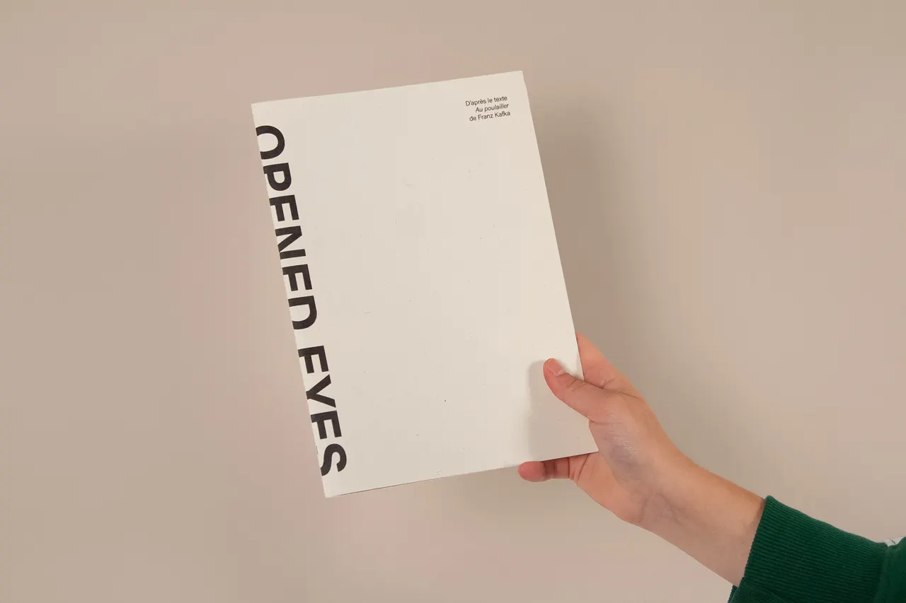

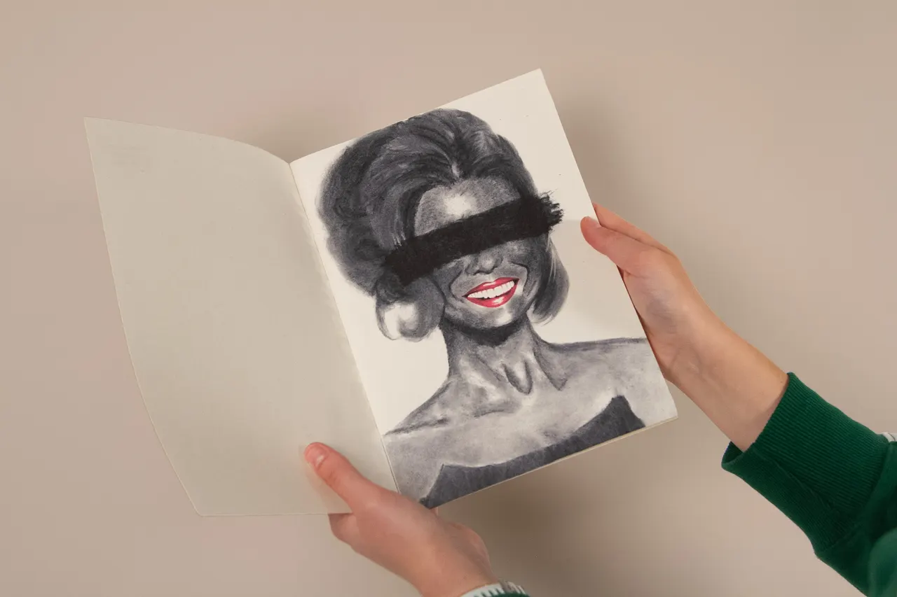

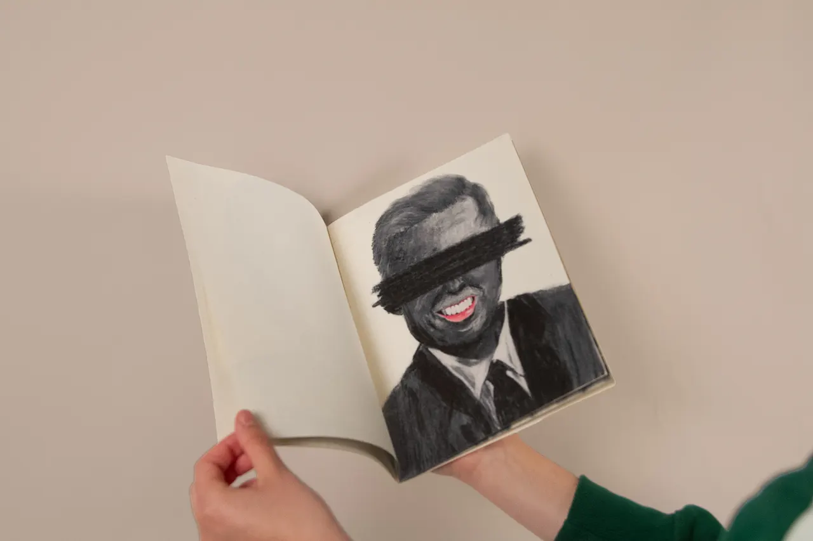

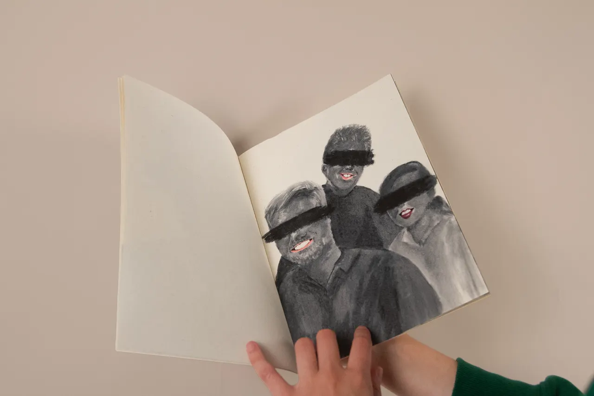

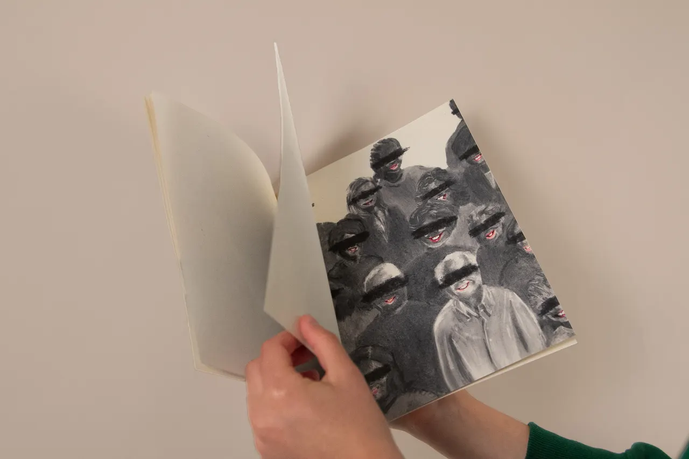

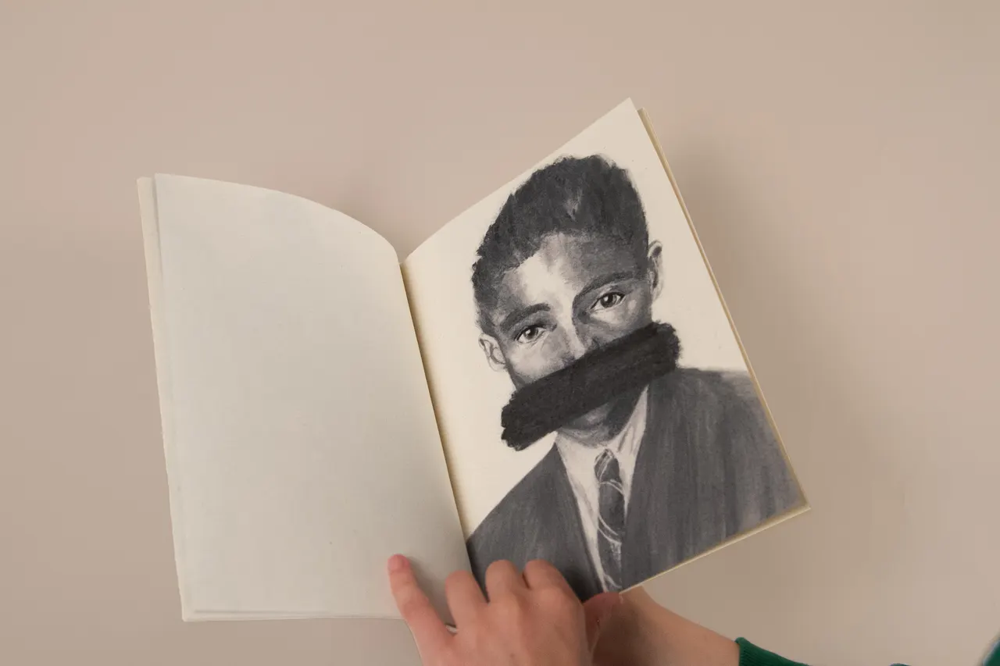

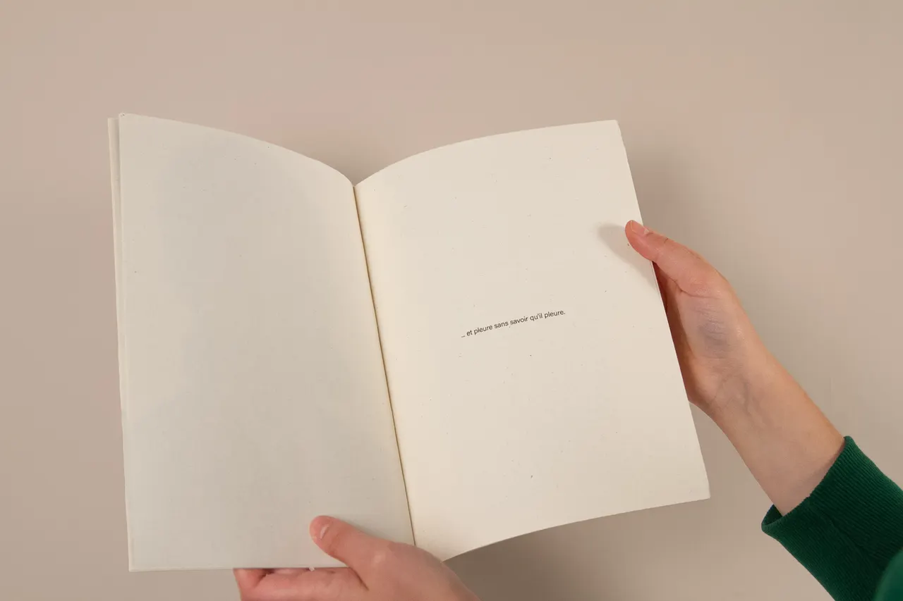

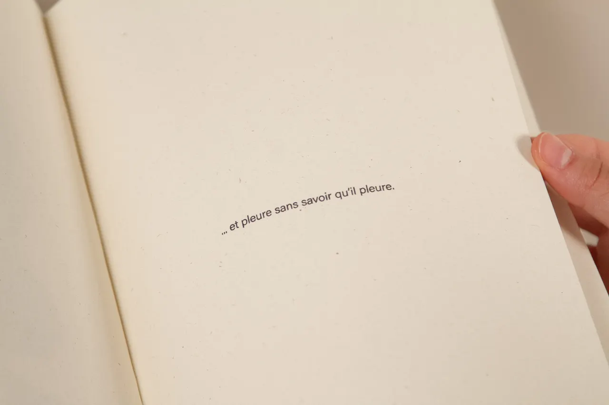

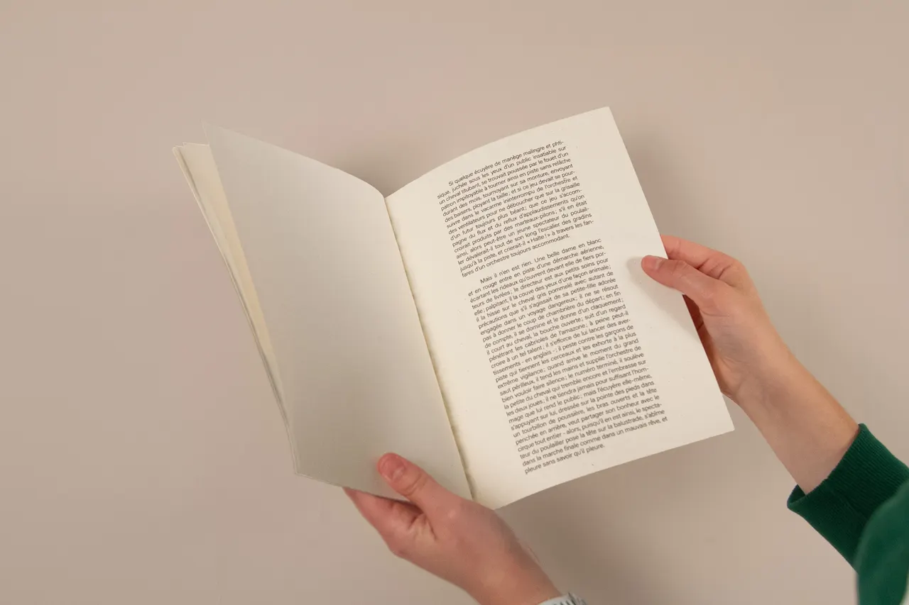

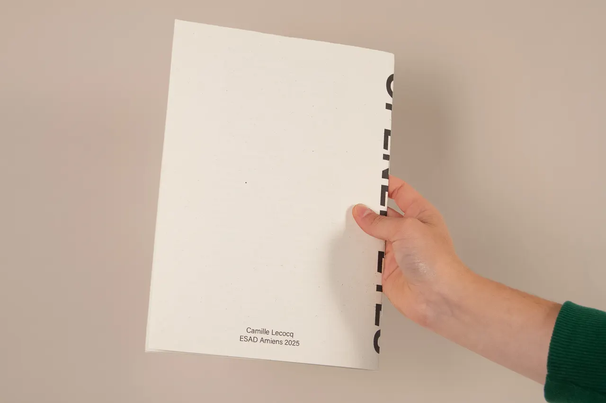